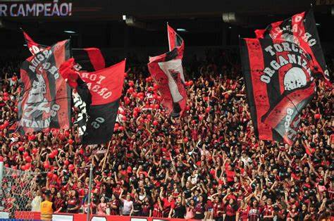
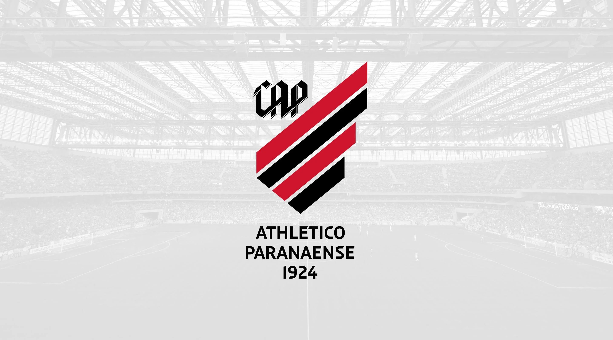

No ano de 2024, infelizmente, o Club Athletico Paranaense viveu uma das maiores crises de sua história, culminando na queda para a Série B do Campeonato Brasileiro. Uma temporada marcada por erros administrativos, desempenho abaixo do esperado e lesões constantes de jogadores-chave. A seguir, vamos entender os principais fatores que levaram a essa triste realidade para a nação rubro-negra.

| Posição | Jogos | Vitórias | Empates | Derrotas | Gols Pró | Gols Contra | Saldo | Pontos |
|---|---|---|---|---|---|---|---|---|
| 17º (Z4) | 38 | 9 | 12 | 17 | 35 | 50 | -15 | 39 |

Apesar da tristeza e da decepção, todo torcedor rubro-negro sabe que o Athletico é gigante e capaz de se reerguer. Que este rebaixamento sirva de lição para reconstruir um clube ainda mais forte, com planejamento, união e amor ao Furacão!